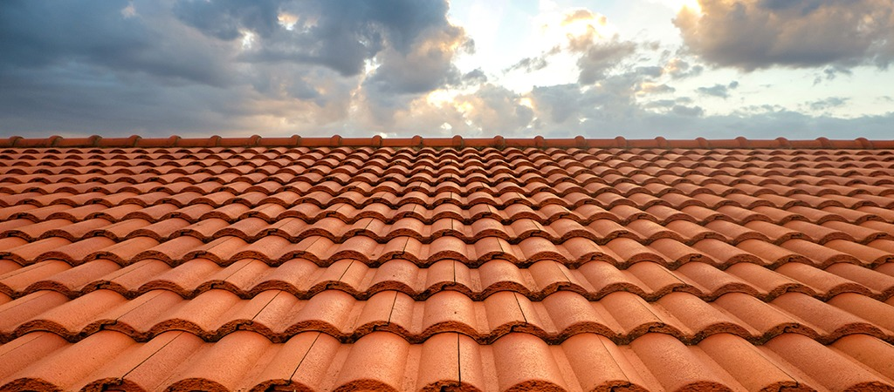

Çatı Yalıtımı

Çatı Yalıtımı
Bina dış kabuk elemanı olarak çatının, maruz kaldığı iç ve dış ortam fiziksel koşullarının kontrolleri amacıyla yalıtım önemli bir parametredir. Yalıtılması gereken başlıca etmenler su/buhar, ısı ışık/radyasyon ve ses olarak sıralanabilir.
Çatı Su/ Buhar Yalıtımı Uygulamaları
- Kar ve yağış sularının uzaklaştırılması, eğimli ve kaplama esaslı çatılarda çatının şekli yönünden önemli bir sorun oluşturmazken, eğimli olmayan teras çatılarda bu suların küçük eğimlerle su gideri noktalarına yönlendirilmesi şeklinde çözümlenir.
- Bina iç hacminde oluşacak su buharı basıncı nedeniyle bu hacmi çevreleyen tüm yapı elemanlarından geçerek dışarı çıkmak isteyecektir. Bu su buharının uzaklaştırılması, çatı türlerine göre değişiklik gösterir.
- Soğuk çatılarda iç hacimlerde oluşacak su buharı, varsa betonarme taşıyıcı döşemeyi, böyle bir döşeme yoksa hacmin tavanını katederek üstteki
- Ancak, sıcak çatıda yağış sularının aşağıya geçmesine engel olan su yalıtım katmanı su buharının dış ortama geçişini de engelleyeceğinden, özel bir önlem alınarak su buharının kolayca dışarı çıkması sağlanmalıdır.
Çatı Isı Yalıtımı Uygulamaları
- Bina dış kabuğundaki ısı kaybının önemli bir kesimini çatılardan kaybedilen ısı enerjisi oluşturmaktadır. Çatılarda bu ısı kaybının belirli nitelikte ısı yalıtım malzemeleri kullanılarak önlenmesi gerekir.
- Isı yalıtım malzemelerinin kullanımı çatının türüne göre değişiklik gösterecektir. Soğuk çatılarda çatı arasının mekan olarak kullanılmadığı durumlarda, ısı tutucu malzeme doğrudan döşeme üzerine serilebilir. Çatı arasının mekan olarak kullanılması durumunda, ısı yalıtımı sorununun doğrudan örtü sistemi içinde çözülmesi gereklidir. Buna karşın sıcak çatı çözümlerinde kullanılacak açık gözenekli klasik ısı tutucuların noktasal yüklere karşı taşıyıcılığını artırmak amacıyla bir şap katmanı ile birlikte kullanılması gerekirken, kapalı gözenekli ve sudan etkilenmeyen ısı tutucu malzemelerin üretilmesi sonucu, ısı tutucu malzemenin su yalıtım katmanlarının üstüne uygulanabilmesi için ters çatı yapma olanağı sağlanmıştır. Yüksek ısı ortamı ile çalışılan fabrikalarda alttan yalıtımlı bir çatı istendiği takdirde, çatı üst tarafının daha güçlü yalıtılması gerekemektedir.